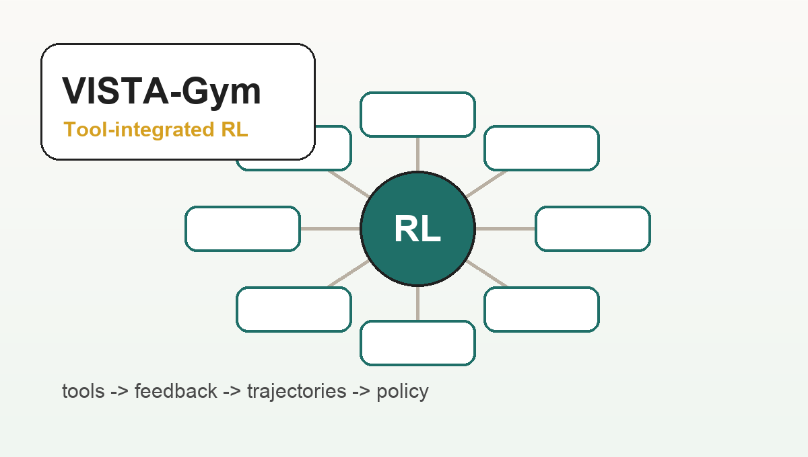
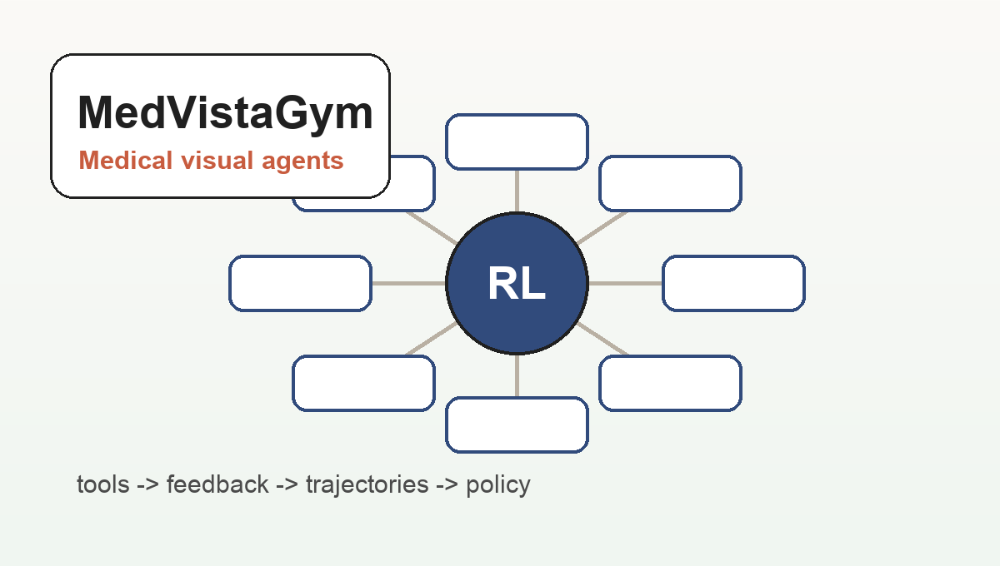
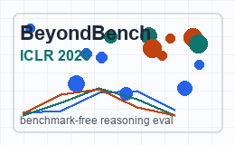
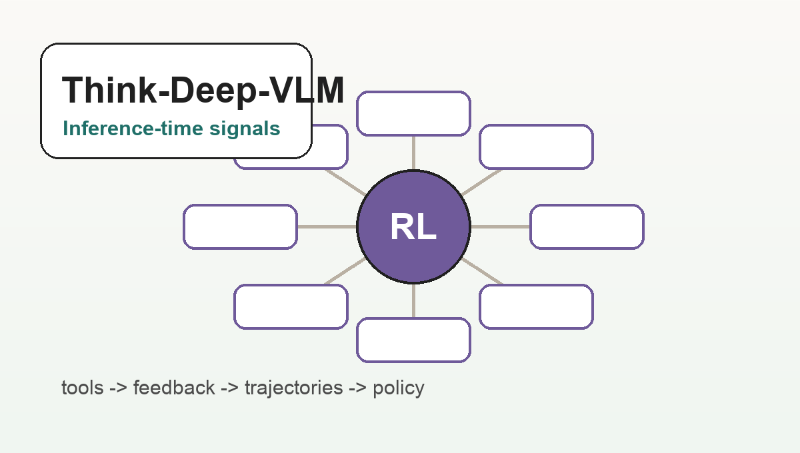
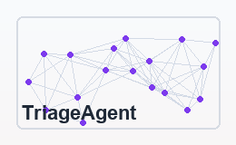

Meng Lu
Ph.D. Student · Virginia Tech
I am a Ph.D. student in Computer Science at Virginia Tech, advised by Prof. Xuan Wang. My research focuses on agentic RL for large VLM/LLM agents, long-horizon reasoning, tool-integrated reasoning, multi-agent collaboration, and efficient multimodal inference.
I build scalable training and evaluation environments where foundation-model agents reason, call tools, receive feedback, and improve through multi-step trajectories. I am currently a research intern at Cisco AI Research working on agentic RL and embodied AI.
Updates
News
- — MedVistaGym released as a scalable training environment for thinking with medical images via tool-integrated reinforcement learning.
- — VISTA-Gym accepted to CVPR 2026 for scalable agentic RL and tool-integrated VLM reasoning.
- — CrossAgentIE accepted to Findings of ACL 2025.
- — TriageAgent accepted to Findings of EMNLP 2024.
- — Featured in the Sanghani Center Student Spotlight .
- — Started Ph.D. study in Computer Science at Virginia Tech.
Selected Publications
Full list on Google Scholar.
All
Agents
RL
Multimodal
Efficiency

MedVistaGym
MEDVISTAGYM: A Scalable Training Environment for Thinking with Medical Images via Tool-Integrated Reinforcement Learning
arXiv 2026
MedVistaGym trains medical VLM agents to invoke tools, localize task-relevant evidence, and perform multi-step reasoning over medical images through executable RL trajectories.

BeyondBench
BeyondBench: Benchmark-Free Evaluation of Reasoning in Language Models
ICLR 2026
BeyondBench evaluates reasoning with dynamically generated algorithmic problems, reducing benchmark contamination and stress-testing model performance across verifiable difficulty levels.

CrossAgentIE
CROSSAGENTIE: Cross-Type and Cross-Task Multi-Agent LLM Collaboration for Zero-Shot Information Extraction
Findings of ACL 2025
CROSSAGENTIE refines structured predictions through cross-type and cross-task multi-agent debate, then distills high-confidence outputs into a more efficient single model.

TriageAgent
TriageAgent: Towards Better Multi-Agent Collaboration for LLM-Based Clinical Triage
Findings of EMNLP 2024 · ICML 2024 AI4Science Workshop Spotlight
TriageAgent uses heterogeneous LLM agents, confidence-aware discussion, early stopping, and RAG over clinical guidelines for collaborative triage reasoning.
Efficient VLM Reasoning
Think-Deep-VLM: VLM-Native Internal Signals for Efficient Inference
Ongoing Project
Studies layer-wise computational dynamics and inference-time response selection signals across multimodal reasoning benchmarks.
Co-evolution
VICO: Visual Environments Co-Evolving for Vision-Language Model Reasoning
NeurIPS 2026 Submission
Explores model-environment co-evolution for improving visual-language model reasoning under adaptive task and environment distributions.
Talks
- — Scaling Agentic RL for Tool-Integrated Reasoning in VLMs.
- — Multi-agent LLM collaboration for structured information extraction.
- — LLM-based multi-agent collaboration for clinical triage.
Awards
- Sanghani Center Student Spotlight, Sanghani Center for AI and Data Analytics, Virginia Tech, 2024
- ICML 2024 AI4Science Workshop Spotlight Paper, acceptance rate 13%, 2024
Professional Experience
- Cisco AI Research — Research Intern, Agentic RL & Embodied AI, Oct 2025 - Present
- Virginia Tech — Graduate Research Assistant, Sanghani Center for AI and Data Analytics, Aug 2023 - Present
Misc
- Research interests: agentic RL, tool-integrated reasoning, long-horizon agents, efficient VLM inference, and multi-agent LLM systems.
- Systems stack: Python, PyTorch, Ray, Gymnasium, vLLM, DeepSpeed, Hugging Face, Docker, AWS, FastAPI, and distributed multi-GPU training/inference.
- Feel free to reach out if you are interested in foundation-model agents, tool-use environments, or efficient multimodal reasoning.